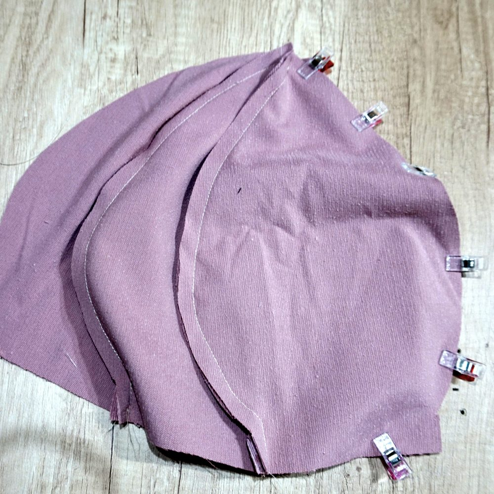
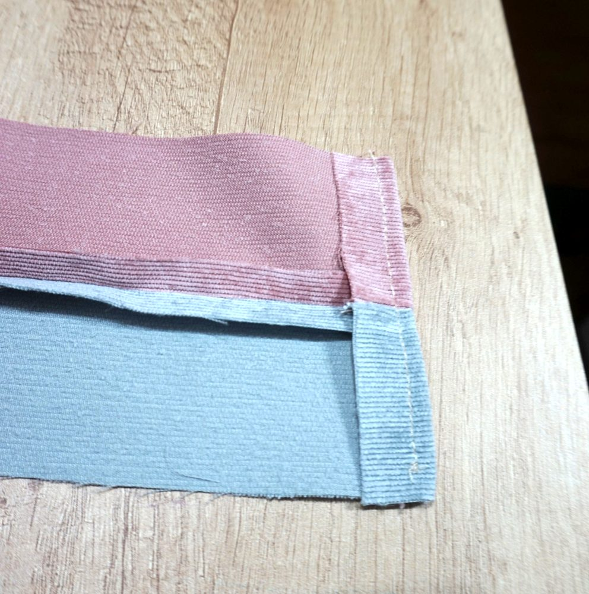
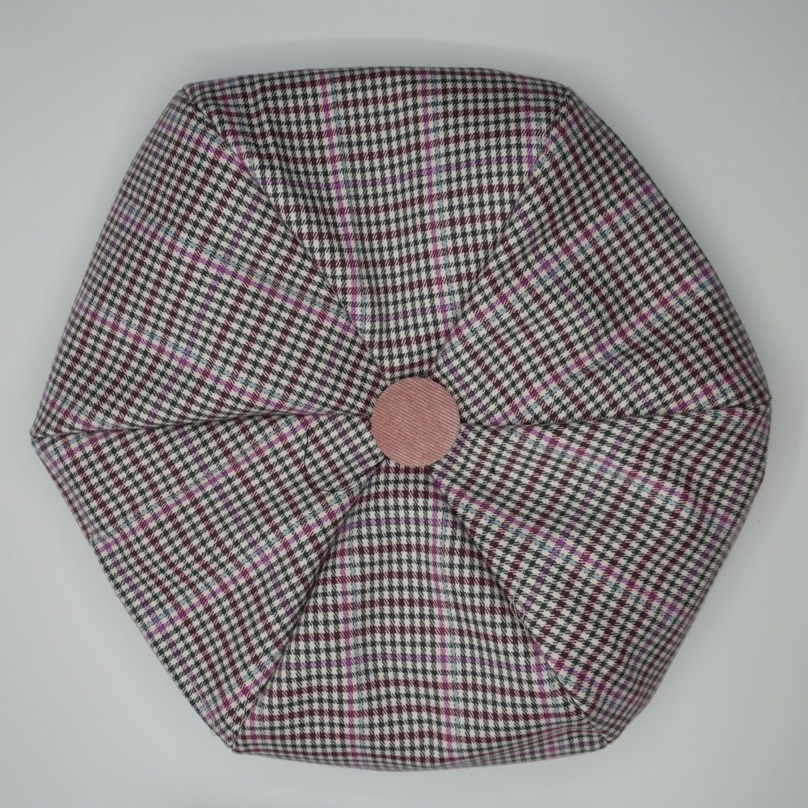
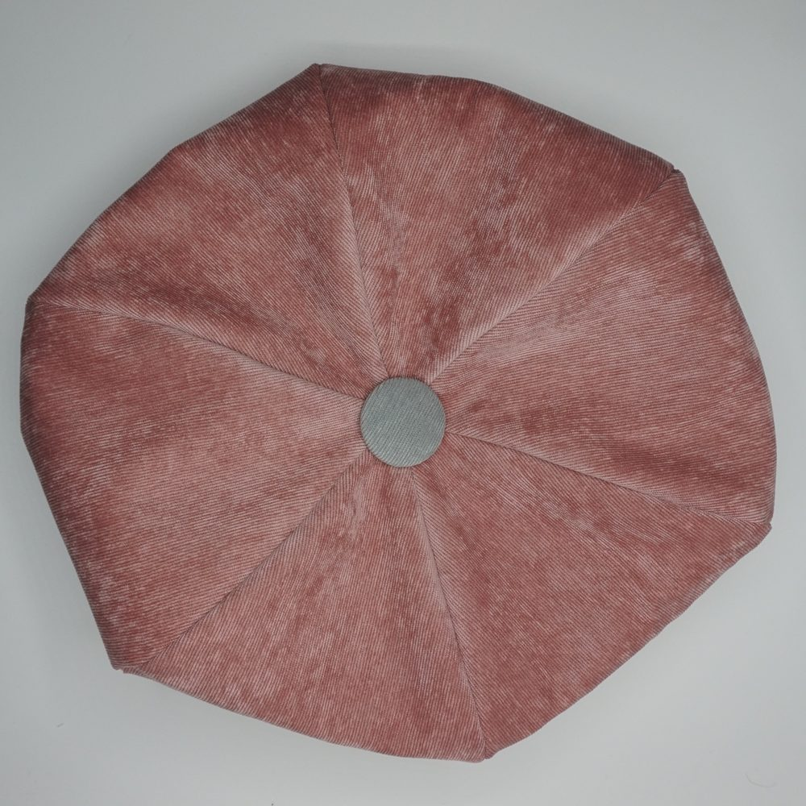

Guide des bérets
Un béret est une coiffe souple, ronde, à couronne plate et sans visière. Il est réalisé en tissu (pas de feutre), réversible, avec un bandeau, six ou huit pétales, avec ou sans passepoil et un bouton sur le dessus (deux s'il est réversible). Ce guide met à jour ma vidéo, en anglais avec sous-titres en français.


Considérations générales
Forme du béret et mesures du pétale
La forme du pétale, et par voie de conséquence celle du béret, se déduit des mesures suivantes :
- le tour de tête et son aisance
- la hauteur du bandeau
- le diamètre du béret souhaité (mesuré sur le dessus plat)
- l'épaisseur du bord (la carre, ou arête) : de 1 à 3 cm, elle détermine si le bord du béret est plat ou bombé
- le nombre de pétales (6 ou 8).

Une fois ces données saisies, l'assistant calcule la forme du pétale. Six pétales conviennent à un béret classique ; pour un béret très ample (XXL), choisissez huit pétales. L'aperçu schématique traduit graphiquement, « en direct », vos mesures, vous permettant un choix éclairé.

Choix des tissus
Il faut un tissu fluide, avec une certaine épaisseur ou un certain poids. L'épaisseur et le poids peuvent être corrigés avec un entoilage. Un peu d'élasthanne (spandex) convient, pas trop. Le tissu secondaire peut être un tissu de doublure (léger) ou, pour un béret réversible, un tissu de poids moyen.
Réversible ?
Le choix d'un béret réversible ne rajoute rien au patron ni à la difficulté de réalisation. La seule différence : l'assemblage d'une doublure légère au tissu principal, plutôt que l'assemblage d'un tissu de poids moyen à ce tissu principal, et la nécessité d'un deuxième bouton.
Attention
- Avec un tissu de poids moyen (béret réversible), l'aisance n'est pas seulement nécessaire pour le confort : elle doit aussi tenir compte du fait que les coutures vont « prendre de la place ». Outre l'aisance de confort, je vous conseille de rajouter 0,5 à 1 cm.
- Si la réalisation du béret semble simple, elle doit être faite avec beaucoup de soin. Une erreur de 1 mm sur la couture de chaque côté du pétale peut se traduire par une erreur de 12 mm sur le tour de tête (16 mm pour le béret XXL).
- La pointe des pétales peut être un défi pour les couturiers débutants : d'où l'importance du bouton sur le dessus qui, outre son caractère esthétique, peut aider à dissimuler une légère imperfection.
Guide de couture et d'assemblage
Préparer les pétales
Fixez un entoilage léger sur les deux tissus. Le marquage est facile, la coupe aussi, au cutter rotatif, trois pétales à la fois. Si le tissu est à motif (un tartan, par exemple), coupez les pétales dans une seule longueur de tissu : les motifs se raccordent, à vérifier avant de coudre.
Le passepoil
Il n'est pas obligatoire : le bandeau peut se concevoir sans. Cependant, il apporte un cachet certain au béret. Il existe de nombreux tutoriels pour fabriquer et coudre un passepoil, et de nombreux passepoils sont disponibles à l'achat. Je préfère réaliser les miens, pour mieux les assortir à mes tissus. L'addition d'un passepoil ne change pas fondamentalement la couture et l'assemblage du béret.
Coudre les pétales
Assemblez les pétales ensemble, pour chacun des deux tissus (principal et secondaire), et repassez pour écraser les coutures.

Réalisation du bandeau
- Placez les deux bandes endroit contre endroit et assemblez-les sur un seul côté long, le côté opposé au rempli de 7 cm. Si vous optez pour un passepoil, c'est ici qu'il convient de l'intégrer au bandeau. Laissez l'autre côté ouvert, retournez les bandes (la couture devient le pli du bas du bandeau) et écrasez ce pli au fer.
- À l'extrémité à replier, dégarnissez la couture sur 4 cm pour faciliter le repli.
- Repliez l'extrémité de 2 cm sur son pli (trait discontinu bleu), marquez le pli au fer et cousez-la.

Le bandeau : couture latérale et pli de l'extrémité - Fermez le bandeau en anneau : recouvrez l'extrémité opposée au pli avec l'extrémité pliée, en faisant coïncider les crans (repères de jonction), puis cousez tout près du pli, sur la ligne repère continue.

Les extrémités du bandeau assemblées - Surpiquez le bandeau sur toute sa longueur.
Assemblage pétales-bandeau
Assemblez le côté du tissu principal à la face correspondante du bandeau, endroit contre endroit. Crantez la marge de couture du bandeau (côté du tissu principal), sur tout son pourtour seulement aux endroits où le bandeau rencontre une couture, pour faciliter son assemblage aux pétales (sans dépasser la ligne de couture) puis cousez.

Placez les deux pièces du béret l'une dans l'autre, endroit contre endroit. Cousez tout le pourtour en respectant l'ouverture du rempli de 7 cm, qui servira à retourner le béret.

Retourner et fermer
Retournez le béret par l'ouverture : ce n'est jamais facile quand elle est petite, mais c'est mieux ainsi.

Rabattez vers l'intérieur du bandeau les remplis de l'ouverture.
Faites une couture de finition le long du haut du bandeau : elle fixe ensemble les deux faces du bandeau et la doublure ou le tissu secondaire, et elle prend aussi les remplis de l'ouverture, ce qui la ferme.

Par quelques points discrets à l'aiguille, dans les coutures du dessus, fixez la doublure à l'intérieur du béret.
Le bouton de finition
Pour une finition parfaite, ajoutez un bouton à la jonction des pointes des pétales. Un bouton recouvrable en tissu convient très bien : recouvrez-le du tissu principal, ou d'un autre tissu pour le contraste. Un bouton sur chacune des faces pour un béret réversible.
Le produit fini



Vidéo : béret français réversible (Reversible French Beret Tutorial)